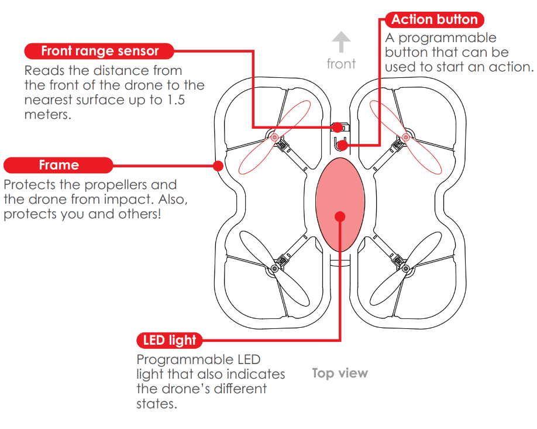
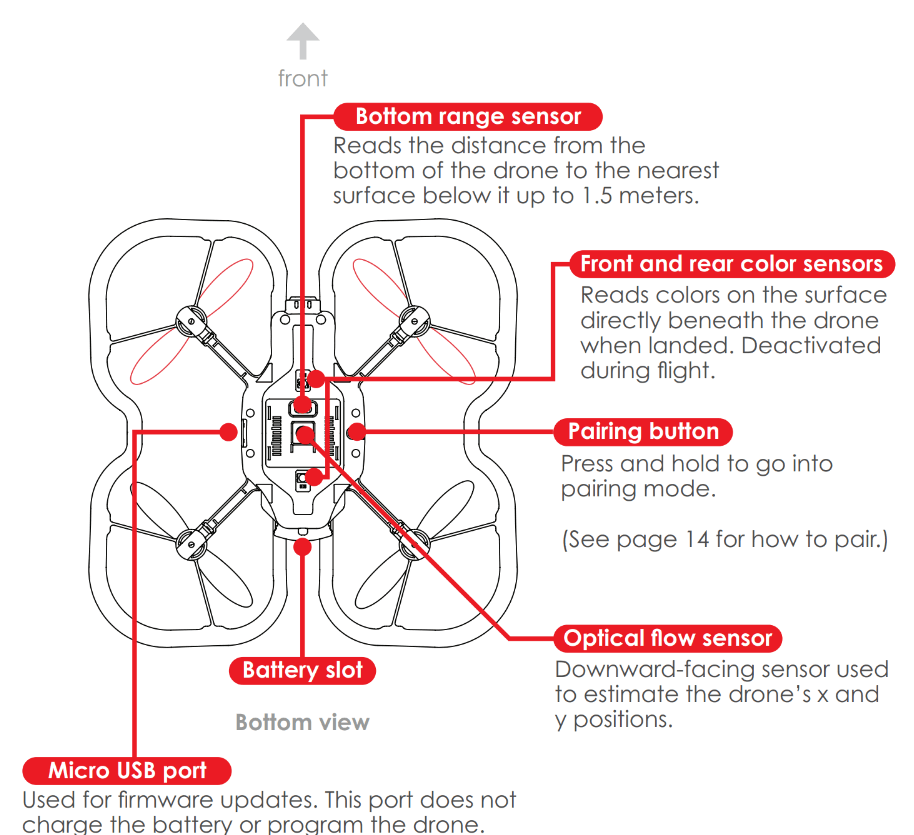
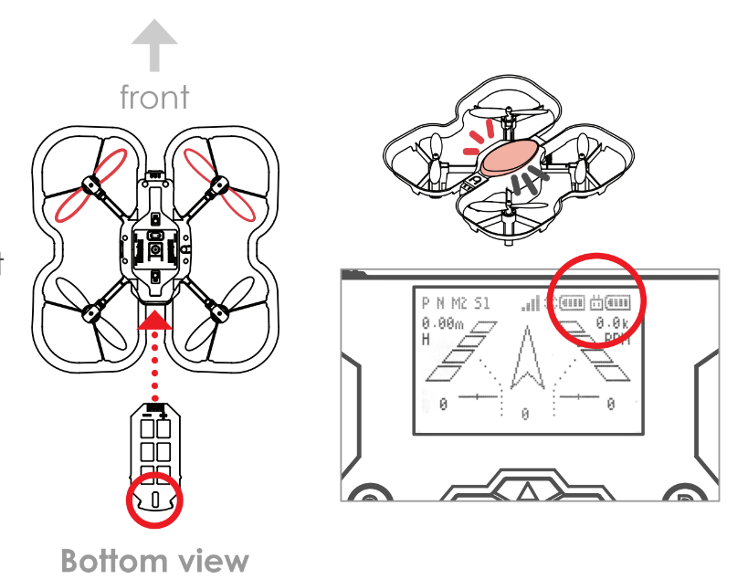
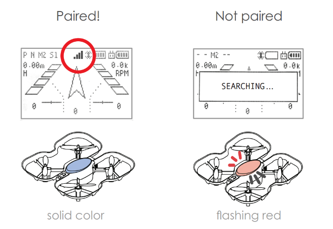
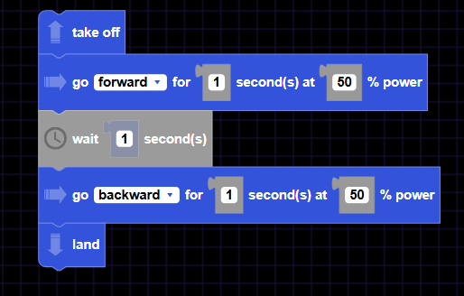
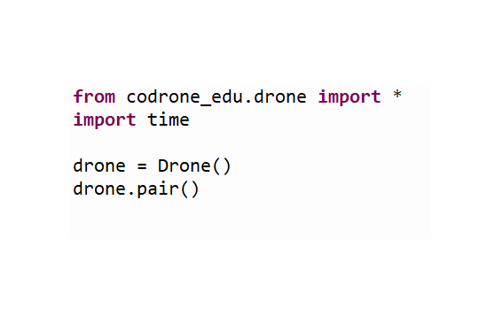

CoDrone EDU je programovateľný dron navrhnutý špeciálne pre edukačné účely, ktorý predstavuje vynikajúci prechod medzi hrou a profesionálnymi inžinierskymi nástrojmi. Kým Tello sa zameriava skôr na stabilný let a funkcie kamery, CoDrone EDU bol vytvorený tak, aby študenti mohli hlbšie pochopiť prepojenie medzi senzormi a kódovaním.


Pomocou diaľkového ovládača môžete dron riadiť, alebo ho po pripojení k počítaču použiť na kódovanie.




Ďalšie informácie o lietaní a používaní dronu nájdete na nasledujúcom odkaze a na vlastnej stránke Robolink:
Codrone EDU - User Manual
Robolink Learn

Blockly for Robolink je bezplatné vizuálne programovacie prostredie spustiteľné z prehliadača, pomocou ktorého môžete ovládať svoj dron Codrone EDU spájaním farebných blokov bez nutnosti písania kódu.
(Ak je diaľkový ovládač pripojený káblom k notebooku alebo počítaču, tlačidlo „Connect“ v ľavom dolnom rohu musí svietiť nazeleno.)
Blockly for Robolink je vizuálne programovacie prostredie, ktoré sa veľmi podobá populárnej aplikácii Droneblocks alebo blokovému rozhraniu Tello Edu, keďže sú postavené na rovnakom základnom princípe: pochopenie logiky kódovania bez písania textovej syntaxe. Keďže CoDrone EDU disponuje viacerými senzormi ako základné Tello, v Blockly budete mať k dispozícii aj špeciálne príkazy, ako je rozpoznávanie farieb (pomocou spodných senzorov) alebo vyhýbanie sa prekážkam s využitím predného snímača vzdialenosti.


Programovanie CoDrone EDU v jazyku Python neznamená len písanie riadkov kódu, ale predstavuje fascinujúci zážitok, kedy sa matematické algoritmy menia na fyzickú realitu vo vzduchu. Pomocou knižnice codrone_edu sa stávate „mozgom“ dronu: získavate priamy prístup k sofistikovaným údajom zo senzorov, vďaka čomu dokážete vytvárať vlastné systémy na vyhýbanie sa prekážkam, misie na rozpoznávanie farieb alebo dokonca úplne autonómne letové trasy.
Stiahnutie: z webovej stránky
(vyberte príslušný operačný systém)
Pred použitím akýchkoľvek špeciálnych príkazov musíte importovať príslušné knižnice. Tieto príkazy budeme používať na začiatku každého nášho programu.


HTML Maker